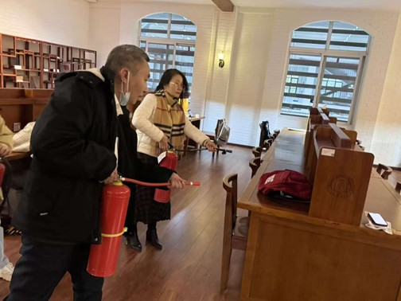

学院通知 · 校园活动
图书馆举行2025年秋季学期消防应急疏散演练活动
发布时间：2025-12-27 00:00:00
为进一步牢固树立安全发展理念，压实安全生产责任，不断巩固和提升图书馆消防工作能力，切实保障图书馆管理服务工作安全，根据图书馆消防安全工作计划，12月26日上午，图书馆在医学图书馆开展了2025年秋季学期消防应急疏散演练活动。学校党委保卫部（处）杨丙军副部（处）长及相关同志、图书馆副馆长李锦清、图书馆各部门负责同志、图书馆消防安全员、物业服务公司相关人员、学生志愿者和医学图书馆在馆师生等参加了演练活动。 本次演练活动，分别设置了指挥协调组、初期火灾扑救组、突发事件预警组、初期扑救支援组、疏散救援组等。针对模拟突发火情，主要演练了火灾应急处置报告、初期火灾现场扑救、在馆人员紧急疏散和伤员救助救援等环节。演练开始以后，各工作小组有序启动突发火情应急处置预案，密切配合，切实做到了报告及时、处置恰当、疏散及时、救援得力，演练活动取得圆满成功。 随后，在医学图书馆大门广场对参演职工和同学开展了消防灭火器规范使用培训。 最后，在医学图书馆“花雨厅”对本次演练活动进行了总结。杨丙军对本次演练活动圆满举行给予了充分肯定，特别强调了图书馆开展消防应急疏散演练活动的重要意义，对演练活动作了全面点评。 李锦清在总结时强调，图书馆作为学校重点防火单位，消防安全责任重于泰山。全馆职工一是要认真学习贯彻《消防法》《安全生产法》等法规，严格遵守学校和图书馆消防安全管理规定，认真落实 “纵向到底、横向到边、逐级负责、分层落实、责任到人”的消防安全工作体系。二是要进一步牢固树立全员安全意识，切实落实全员安全责任，做到“守土有责、守土负责、守土尽责”，不断强化全面安全管理，落实落细全方位安全措施，抓紧抓好全过程安全管控，不断推进图书馆安全管理体系建设。
